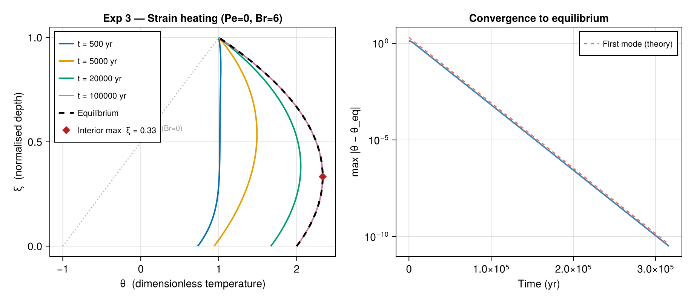

Exp 3 — Strain heating
Parameters: Pe = 0, Br = 6, γ = 2, β′ = 0, Λ = 0
Physical interpretation
A large Brinkman number (Br = 6) means viscous strain heating dominates the energy budget. This scenario represents fast-flowing ice (e.g., an ice stream or outlet glacier) where internal deformation generates significant heat. With Pe = 0 (no net vertical advection), the steady-state solution is a downward-opening parabola: the interior heats up relative to both boundaries, creating a temperature maximum away from the surface.
The source term $\Omega = \mathrm{Br} = 6$ enters the quadratic stationary solution
\[\vartheta(\xi) = -3\xi^2 + 2\xi - 1 + C ,\]
producing a maximum at $\xi = 1/3$ (one-third of the way up from the base).
The transient decay is the same as Exp 1 (same Pe = 0) with decay timescale $\approx$ 12 800 yr for the slowest mode.
Example
using IceColumnSolutions, CairoMakie
par = benchmark(:exp3)
sol_eq = solve_stationary(par; nz=100)
# Find the depth of the interior temperature maximum
ξ_max = sol_eq.zeta[argmax(sol_eq.theta_eq)]
T0 = 230.0
ts = [500.0, 5_000.0, 20_000.0, 100_000.0]
sol = solve(par, ts; init=uniform(T0), n_modes=12, nz=100)
fig = Figure(size=(920, 400))
ax1 = Axis(fig[1,1],
xlabel = "θ (dimensionless temperature)",
ylabel = "ξ (normalised depth)",
title = "Exp 3 — Strain heating (Pe=0, Br=6)")
colors = Makie.wong_colors()
for (j, t) in enumerate(ts)
lines!(ax1, sol.theta[:, j], sol.zeta;
color=colors[j], linewidth=2, label="t = $(Int(t)) yr")
end
lines!(ax1, sol_eq.theta_eq, sol_eq.zeta;
color=:black, linestyle=:dash, linewidth=2.5, label="Equilibrium")
# mark interior maximum
θ_max = maximum(sol_eq.theta_eq)
scatter!(ax1, [θ_max], [ξ_max]; color=:firebrick, markersize=12,
marker=:diamond, label="Interior max ξ = $(round(ξ_max, digits=2))")
axislegend(ax1; position=:lt, labelsize=11)
# also show Exp 1 equilibrium for comparison
par1 = benchmark(:exp1)
sol1 = solve_stationary(par1; nz=100)
lines!(ax1, sol1.theta_eq, sol1.zeta;
color=:gray70, linestyle=:dot, linewidth=1.5)
text!(ax1, sol1.theta_eq[50], sol1.zeta[50] + 0.05; text="Exp 1 (Br=0)",
color=:gray60, fontsize=10)
ax2 = Axis(fig[1,2],
xlabel = "Time (yr)",
ylabel = "max |θ − θ_eq|",
title = "Convergence to equilibrium",
yscale = log10)
ts_d = exp10.(range(2, 5.5, length=60))
sol_d = solve(par, ts_d; init=uniform(T0), n_modes=12, nz=100)
dev = [maximum(abs.(sol_d.theta[:,j] .- sol_d.theta_eq)) for j in eachindex(ts_d)]
kappa_yr = par.kappa * 365.25 * 24 * 3600
tau_d = kappa_yr .* ts_d ./ par.L^2
lines!(ax2, ts_d, dev; color=:steelblue, linewidth=2)
lines!(ax2, ts_d, 2 .* exp.(-(π/2)^2 .* tau_d);
color=:tomato, linestyle=:dash, linewidth=1.5, label="First mode (theory)")
axislegend(ax2; position=:rt, labelsize=11)
fig
Notes
- The equilibrium profile (dashed) clearly shows the parabolic interior warming relative to Exp 1 (dotted), with the diamond marking the maximum.
- The transient convergence rate (right panel) is identical to Exp 1 because $\Omega$ only shifts the stationary solution, not the eigenvalues.
- Br = 6 is chosen to produce an exaggerated interior maximum for mathematical testing; realistic values for fast-flowing glaciers are Br ≈ 0.01–0.5.